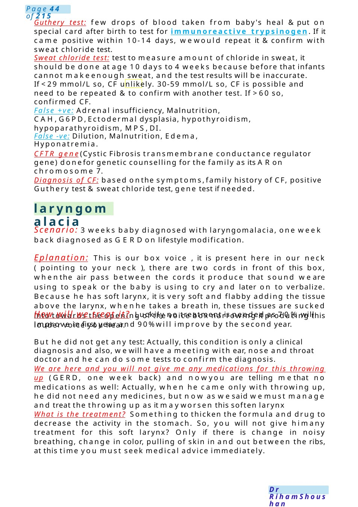

laryngomalacia
Guthery test: few drops of blood taken from baby's heal &put on special card after birth to test for immunoreactive trypsinogen. If it came positive within 10-14 days, wewould repeat it &confirm with sweat chloride test. Sweat chloride test: test to measure amount of chloride in sweat, it should be done at age 10 days to 4 weeks because before that infants cannot makeenough sweat, and the test results will be inaccurate.
Scenario Summary
Guthery test: few drops of blood taken from baby's heal &put on special card after birth to test for immunoreactive trypsinogen. If it came positive within 10-14 days, wewould repeat it &confirm with sweat chloride test. Sweat chloride test: test to measure amount of chloride in sweat, it should be done at age 10 days to 4 weeks because before that infants cannot makeenough sweat, and the test results will be inaccurate.
Full Original Scenario

laryngomalacia
Guthery test: few drops of blood taken from baby's heal &put on special card after birth to test for immunoreactive trypsinogen. If it came positive within 10-14 days, wewould repeat it &confirm with sweat chloride test.
Sweat chloride test: test to measure amount of chloride in sweat, it should be done at age 10 days to 4 weeks because before that infants cannot makeenough sweat, and the test results will be inaccurate.
If <29 mmol/L so, CF unlikely. 30-59 mmol/L so, CF is possible and need to be repeated & to confirm with another test. If >60 so, confirmed CF.
False +ve: Adrenal insufficiency, Malnutrition, CAH,G6PD,Ectodermal dysplasia, hypothyroidism, hypoparathyroidism, MPS,DI.
False -ve: Dilution, Malnutrition, Edema, Hyponatremia.
CFTR gene(Cystic Fibrosis transmembrane conductance regulator gene) donefor genetic counselling for the family as its ARon chromosome 7.
Diagnosis of CF: based onthe symptoms,family history of CF, positive Guthery test &sweat chloride test, gene test if needed.
Scenario: 3 weeks baby diagnosed with laryngomalacia, one week back diagnosed as GERDon lifestyle modification.
Eplanation: This is our box voice , it is present here in our neck ( pointing to your neck ), there are two cords in front of this box, whenthe air pass between the cords it produce that sound we are using to speak or the baby is using to cry and later on to verbalize. Because he has soft larynx, it is very soft and flabby adding the tissue above the larynx, whenhe takes a breath in, these tissues are sucked into towards the opening of the voice box narrowing it producing this louder voice you hear.
How will we treat it? Luckily no treatment is needed as 70% will improve in first year and 90%will improve by the second year.
But he did not get any test: Actually, this condition is only a clinical diagnosis and also, wewill have a meeting with ear, nose and throat doctor and he can do some tests to confirm the diagnosis.
We are here and you will not give me any medications for this throwing up (GERD, one week back) and nowyou are telling methat no medications as well: Actually, when he came only with throwing up, he did not need any medicines, but now as wesaid wemust manage and treat the throwing up as it mayworsen this soften larynx
What is the treatment? Something to thicken the formula and drug to decrease the activity in the stomach. So, you will not give himany treatment for this soft larynx? Only if there is change in noisy breathing, change in color, pulling of skin in and out between the ribs, at this time you must seek medical advice immediately.

Vit KProphylaxis
MRCPCHCommunication Scenario: Vitamin KRefusal
Setting: Postnatal ward
Candidate role: Junior doctor
Parent: Samia, mother of a healthy full-term newborn boy, declining vitamin Kinjection due to concerns about autism
Doctor: Hello Samia, congratulations on your newbaby. Howare you feeling today?
Mother: Thank you. I’mokay. But I don’t want mybaby to have the vitamin Kinjection.
Doctor: Thank you for sharing that with me. Mayi knows why?
Mother: I heard that vitamin Kinjection cause Autism.
Doctor: I can understand why that would worry you. Would you mind telling mewhere you heard that from, or what specifically concerns you?
Mother: I saw something online saying injections in newborns can increase the risk of autism.
Doctor: I see—there’s a lot of information online, and it can be difficult to know what’s accurate. Would it be okay if I explain what weknow from medical research about vitamin Kand autism?
Mother: Yes, please.
Doctor: There’s no scientific evidence linking vitamin Kinjections to autism. This concern came up manyyears ago, but large, well-conducted studies since then have shownno connection at all. Autism is a complex condition that we believe is mainly related to genetic and developmental factors—notfrom things like vitamin Kinjections.